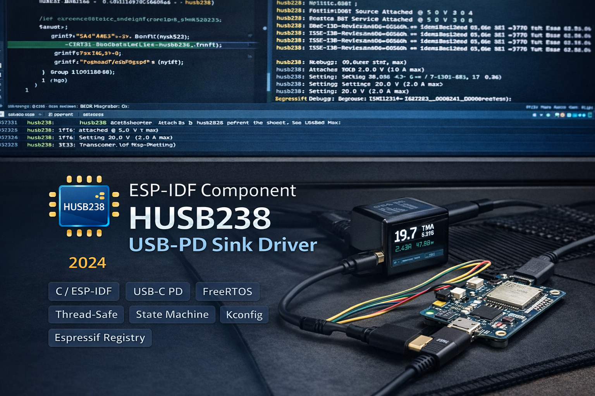

Production-quality ESP-IDF driver for the Hynetek HUSB238 USB Power Delivery sink controller. Two-layer API architecture - low-level register access and a high-level FreeRTOS controller with automatic device detection, hot-plug handling, state machine, and thread-safe voltage selection. Published on the Espressif Component Registry.

The driver is split into two complementary layers. The low-level register API (husb238.c, 16 functions) provides direct I2C access to all HUSB238 registers - reading PD status, querying source capabilities, selecting voltages, and issuing GO commands (request PD, get capabilities, hard reset). Each register read/write uses a 100ms I2C timeout with proper error propagation.
The high-level controller API (husb238_controller.c, 13 functions) wraps this in a FreeRTOS background task that continuously monitors device presence and attachment state. It manages a 5-state machine (NOT_PRESENT → INITIALIZING → WAITING_PD → CONNECTED → ERROR), fires callbacks on voltage and state changes, and provides mutex-protected operations like husb238_controller_next_voltage() and husb238_controller_request_voltage() for thread-safe multi-task usage.
When a USB-C PD source connects, the controller waits 500ms for PD negotiation to complete, reads the response code, then scans all six voltage registers (5V through 20V) to build a list of available PDOs with their maximum current capabilities. The non-contiguous register encoding (5V/9V/12V at 0x01–0x03, 15V/18V/20V jumping to 0x08–0x0A) is abstracted away so the user just sees a clean index-based API.
After selecting a voltage via husb238_select_pd() and issuing the GO command, the driver waits 500ms then reads back the actual negotiated voltage for verification. If there's a mismatch (source rejected the request), it returns ESP_ERR_INVALID_RESPONSE but still updates state and fires the callback so the application can decide how to respond. The optional force_5v_on_connect config flag ensures a safe starting voltage on every cable insertion.
The component supports two I2C modes. Option A: the controller creates and owns the I2C bus internally - just provide SDA/SCL GPIO numbers and it calls i2c_new_master_bus() on I2C_NUM_0 with internal pull-ups and glitch filtering (count = 7). On deinit, the bus is deleted. Option B: pass your own i2c_master_bus_handle_t for bus sharing with other I2C devices - the controller uses it but won't delete it on cleanup (tracked by an internal i2c_bus_owned flag).
During device polling, I2C error log spam is suppressed by temporarily setting the i2c.master log tag to ESP_LOG_NONE, then restoring the previous level. This keeps serial output clean when the HUSB238 isn't connected yet - a detail that matters in production firmware where you're watching logs for real issues.
Seven Kconfig options live under Component config → HUSB238 Configuration: I2C SDA/SCL GPIOs, bus frequency (10kHz–400kHz), force-5V-on-connect toggle, FreeRTOS task stack size (2048–8192) and priority (1–24), and a 6-level log verbosity selector. Three example projects demonstrate different integration patterns: basic polling, physical button voltage cycling with GPIO interrupt + debounce, and an Arduino-ESP32 variant using setup()/loop() with Serial.printf() output.